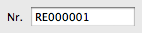

Beim Anlegen eines neuen Kunden, eines Produktes oder eines Dokumentes wird automatisch die Kunden-, Artikel- oder Dokumentennummer hochgezählt.
Für Kunden, Produkte und jede Art von Dokument kann ein unterschiedliches Format vorgegeben werden.
Als Platzhalter für die Nummer dient die Zeichensequenz: {Xnr}
Das X ist durch die Anzahl der Stellen zu ersetzen.
Die Zahl wird mit Nullen aufgefüllt, bis die Anzahl der Stellen erreicht ist.
Beispiel:
RE{5nr}
erzeugt bei einer Rechnungsnummer '200' eine formatierte Rechnungsnummer von:
RE00200
Für das Datum sind folgende Platzhalter vorgesehen:
Beispiel:
RE{YYYY}-{MM}-{DD}-{5nr}
erzeugt bei einer Rechnungsnummer '200' eine formatierte Rechnungsnummer von:
RE2011-04-09-00200
Soll die Dokumentennummer täglich / monatlich / jährlich bei 1 beginnen, so sind die Platzhalter für das Datum in Kleinbuchstaben zu setzen:
Beispiel:
RE{yyyy}-{mm}-{5nr}
erzeugt trotz einer Rechnungsnummer '200' am 31.03.2011 eine formatierte Rechnungsnummer am Beginn des 01.04.2011 von:
RE2011-04-00001
Für folgende Daten kann das Format vorgegeben werden: